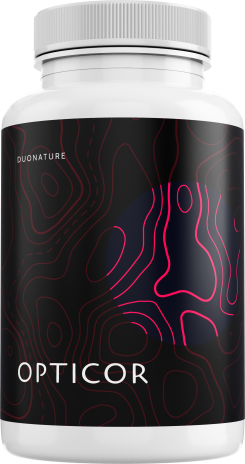

100% orgánico

3567 personas lo pidieron hoy
Pide que te llamen
Opticor©: presión arterial normal desde su primer consumo. Acción prolongada.
Ataca la causa de la enfermedad, reduciendo a cero el riesgo de derrame
cerebral e infarto.

Normaliza la presión arterial dentro de las primeras 6 horas debido a los
bioflavonoides.

Restaura el tono y la elasticidad de los vasos sanguíneos con un solo
tratamiento.

Seguro para cualquier edad Efectivo en las etapas I, II y III de la
hipertensión.

Venta -50%
La cantidad del producto es limitada:
18 unidades
Precio de exportación:
256000 pesos
Precio de descuento:
128000
pesos
pesos
¡Compruébalo tú mismo! ¿Padeces al menos uno de los siguientes
síntomas?

Dolores de cabeza
Taquicardia
Puntos negros ante los ojos (miodesopsias)
Fatiga crónica
Apatía, irritación, somnolencia
Edema facial
Visión borrosa
Dedos adormecidos y fríos
Hiperhidrosis
Picos de presión arterial
¿Por qué es peligrosa la hipertensión?
Las consecuencias de la hipertensión arterial son más peligrosas que las enfermedades oncológicas y la
tuberculosis en conjunto. El 89% de los casos de hipertensión terminan en infartos. La trombosis se
desarrolla en los vasos sanguíneos. Los riesgos de hemorragias cerebrales y el desarrollo de apoplejías
son altos.
Fumar, beber alcohol, la malnutrición, el sedentarismo, el estrés y los
altos niveles de colesterol hacen que las consecuencias sean especialmente peligrosas. Las personas con
exceso de peso sufren de hipertensión 3-4 veces más a menudo que las personas normales.

El descubrimiento de los científicos que marcó una época
A los científicos británicos del Centro Nacional de Flebología les llevó 8 años
desarrollar este suplemento terapéutico profiláctico.
El descubrimiento del año fue nominado para el Premio Internacional de la
Fundación Gairdner.
Las pruebas en múltiples etapas demostraron la efectividad del suplemento, lo
que proporcionó a los investigadores todas las licencias, certificados de calidad y apoyo gubernamental
necesarios.
Opticor elimina las 5 causas principales de la hipertensión

Sistema nervioso sobrecargado (estrés, insomnio, etc.)
Opticor alivia la ansiedad gracias al contenido de la raíz de valeriana y
de la agripalma.

Toxinas en los vasos sanguíneos
Opticor mejora la actividad cardíaca, limpia los vasos sanguíneos de
residuos gracias a los bioflavonoides obtenidos del café verde y el espino.

Varicosidad y trombosis
Opticor mejora la circulación sanguínea, desintegra los coágulos y refuerza
las paredes de los vasos sanguíneos debido al contenido de conos florales concentrados, conocidos como
lúpulo (Humulus lupulus).

Aumento del nivel de azúcar en la sangre
Opticor reduce el nivel de azúcar en la sangre, previniendo la diabetes
gracias a los extractos de orégano y cola de caballo.

Exceso de peso
Opticor estimula el adelgazamiento, el metabolismo y el funcionamiento de
los riñones gracias al extracto de melisa.
Opinión de experto
¡Lo confirmo!
El principal agente contra la hipertensión son los bioflavonoides. Sólo pueden
obtenerse del té verde y del espino. Están presentes en casi todos los remedios para la hipertensión.
¡Pero! ¡Su concentración en la mayoría de los productos es insignificante!
Por consiguiente, es posible que haya que esperar el efecto durante muchos años.
Sé con certeza que el único remedio con abundancia de bioflavonoides es el Opticor. Vi su fórmula y las
conclusiones de expertos independientes y personas reconocidas. Recomiendo este suplemento a los pacientes
y les regaño si empiezan a autotratarse y toman algo que "un amigo les aconsejó", "lo leyeron en
Internet", "lo escucharon en la televisión".
¡Esto no es correcto! ¡Deberías luchar contra la hipertensión sólo con métodos
seguros! Esos en los que confían los médicos, que harán que tu enfermedad desaparezca para siempre.
Antonio López Médico de categoría superior, Ph.D. en Medicina
Venta -50%
La cantidad de productos en los almacenes más cercanos es limitada:
18 unidades
Precio de exportación:
256000 pesos
Precio de descuento:
128000
pesos
pesos
La cantidad del producto es limitada:
La efectividad de Opticor© fue confirmada mediante ensayos clínicos
Resultados de la investigación
PLACEBO

Normalización de la presión arterial
1%
Eliminación de la trombosis venosa
0%
Eliminación de la arritmia
2%
Opticor©
Normalización de la presión arterial
100%
Eliminación de la trombosis venosa
90%
Eliminación de la arritmia
99%
Comentarios de personas que apreciaron el efecto de Opticor©
Comprendí que la reducción de la PA provoca un accidente cerebrovascular
isquémico - infarto cerebral - al ver que le sucede a mi hermana mayor. Los médicos le salvaron la
vida, pero no se recuperó completamente. La primera vez que también enfrenté esta enfermedad, ya
conocía algunos trucos y sabía que debía buscar remedios vegetales y herbales. Mi médico, una mujer
muy sabia, me recetó Opticor. Le estoy muy agradecida. Ya pasaron 4 años y ya no soy hipertensa. Soy
una persona completamente sana, que no tiene miedo de un infarto ni de una apoplejía. ¡Cuida tu salud!
Hace algunos años, recibí un tratamiento en el sanatorio de Florida. Allí
se investigaba un nuevo remedio para la hipertensión. Sin duda, tenía miedo. Pero, ¿qué otra cosa
podía hacer? Ningún otro remedio me ayudaba, así que decidí intentarlo. Por suerte, estaba en un grupo
que tomaba Opticor, y no el placebo. Dos horas después, mi presión se normalizó. Poco a poco, empecé a
sentirme mucho mejor! Estoy muy contento de haber participado en el ensayo del producto en ese
entonces. Ahora, mi PA siempre está en norma.
Tengo 51 años. Hace 3 años me diagnosticaron hipertensión en nuestra
clínica. Un soplo cardíaco y así sucesivamente. Padecí pero no hice nada al respecto. Hace 6 meses, a
juzgar por todos los signos, tuve un micro infarto. Entonces, naturalmente, me asusté, pero me negué a
tomar las pastillas que me recetaron de inmediato. La química es dañina, eso todo el mundo lo sabe.
Pero no tenía ni idea de qué hacer. Afortunadamente, me encontré con un viejo amigo que me recomendó
Opticor. Ahora, como pueden adivinar, NADA me preocupa. Mi presión es normal, ¡estoy sano como un
caballo!
Beneficios de Opticor©

Ayuda rápida.
En las primeras 6 horas siguientes a la ingesta, tu presión se normalizará.

No causa picos o caídas de presión repentinas.
Regula con exactitud la función cardíaca.

Mejoramiento integral de la salud.
Eliminación de la angina de pecho, la arritmia, la neurosis, mejora la
memoria, recupera el habla y los movimientos después de los accidentes cerebrovasculares.

Resultado efectivo sin efectos secundarios.
Las células vivas de las plantas coinciden completamente con las células
del cuerpo humano
Método de uso:
Toma 2 cápsulas después de comer. Para un máximo rendimiento toma el
producto durante 3 meses. Las instrucciones detalladas están incluidas en el envase.
Venta -50%
La cantidad del producto es limitada:
18 unidades
Precio de exportación:
256000 pesos
Precio de descuento:
128000
pesos
pesos
Ingresa tus datos en el siguiente formulario: